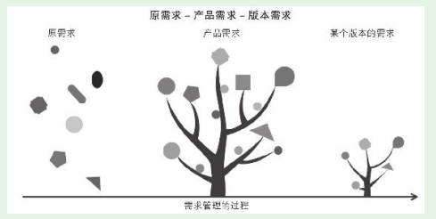

1. 第1节 需求管理的内容和过程
需求是由用户产生的，我们产品人不能替用户产生需求，我们只能去发现、理解需求。
。产品经理想做的需求总是很多，觉得很多需求都非常重要，优先级都很高
- 砍需求，决定某些需求我们不去满足，至少在最近的版本中不去满足；然后决定要满足的需求项，这也需要进行适当的拆分或合并，这样便于实施；最后还要为需求排优先级，决定哪些需求更重要，这些需求要优先满足。做以上这些事的过程就是对需求进行管理。
1.1. 功能性需求和非功能性需求
非功能性需求具有很强的跨产品共性。某类产品，通常具有相同的非功能性需求。
无论是原需求、产品需求还是版本需求，功能性需求都是主体。用户提出的原需求往往很少有非功能性需求
1.2. 需求管理和需求演变的过程

- 这个过程和烹调很像，厨师（产品经理）对食材（原需求）一步步处理（管理），先将其变成半成品（产品需求），最终变成一道可以端上桌的菜（版本需求）
- 产品人在理解原需求的基础上，对原需求做了大量处理工作，将众多需求点“串”成了一个有机整体
- 产品需求是大树，版本需求就是小树。这棵小树可以逐渐长成大树，正如经过一个个版本迭代产品最终成型一样。
- 不能根据原需求实现产品，因为这样不系统且缺乏整体考虑。也不能根据产品需求实现产品，因为产品需求太大太复杂。产品实现团队真正的工作依据其实是一个个具体的版本需求。
1.3. 需求管理的内容
需求管理就是以用户原需求为对象，以对需求项的全面分析为基础，综合考虑市场价值、实施成本等相关因素，对需求项进行分别处理。落实下来主要是： （1）对需求项进行取舍，决定哪些需求在产品中应予以满足，哪些需求要放弃。产品不需要也不可能满足用户所有的需求。 （2）对需求项拆分、合并、转化、提升。 （3）为需求项排优先级。 （4）对需求项分批释放。
需求管理对后续环节的影响极大。水平不高的产品团队，往往需求管理都不会做好。大量的低价值需求会消耗大量人力资源，还要占用大量高成本的技术资源。这样的产品团队会让自己和技术人员都陷入忙碌中，最终产生的价值却很低。
1.4. 随手练习
- 这个还不是太清晰，对公司的产品、市场情况了解的还不是那么透彻